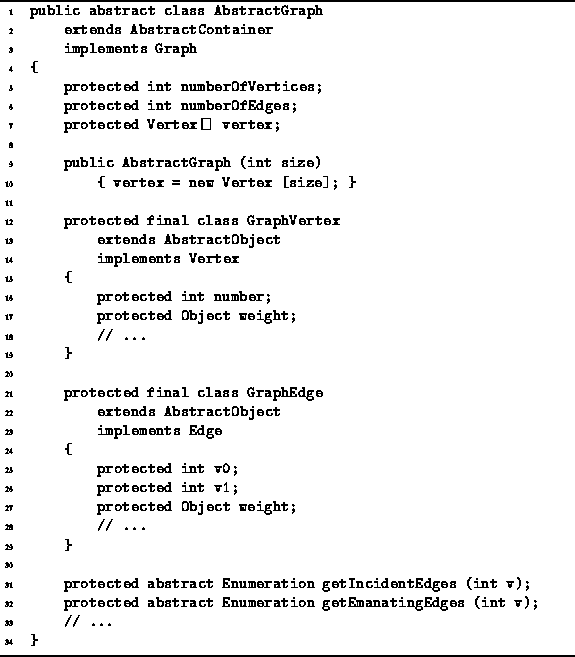

Data Structures and Algorithms
with Object-Oriented Design Patterns in Java
Data Structures and Algorithms
with Object-Oriented Design Patterns in Java
Program  introduces the AbstractGraph class.
The AbstractGraph class extends the AbstractContainer class
introduced in Program
and it implements the Graph interface
defined in Program .
introduces the AbstractGraph class.
The AbstractGraph class extends the AbstractContainer class
introduced in Program
and it implements the Graph interface
defined in Program .

Program: AbstractGraph interface.
The AbstractGraph class serves as the base class from which
the various concrete graph implementations
discussed in Section are derived.
The AbstractGraph class also provides implementations
for the graph traversals described in Section
and for the algorithms that test for cycles and connectedness
described in Section .
As shown in Program ,
the AbstractGraph class defines
two inner classes,
GraphVertex and GraphEdge.
Both classes extend the AbstractObject class introduced
in Program .
The GraphVertex class implements the Vertex interface. It comprises two fields--number and weight. Each vertex in a graph with n vertices is assigned a unique number in the interval [0,n-1]. The number field records this number. The weight field is used to record the weight on a weighted vertex.
The GraphEdge class implements the Edge interface. It comprises three fields--v0, v1, and weight. The first two record the vertices that are the end-points of the edge. The third field, weight, is used to record the weight on a weighted edge.
 Copyright © 1998 by Bruno R. Preiss, P.Eng. All rights reserved.
Copyright © 1998 by Bruno R. Preiss, P.Eng. All rights reserved.